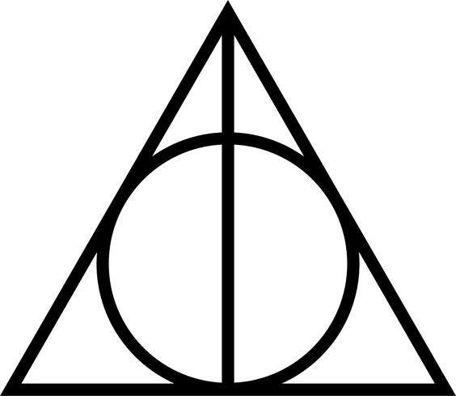
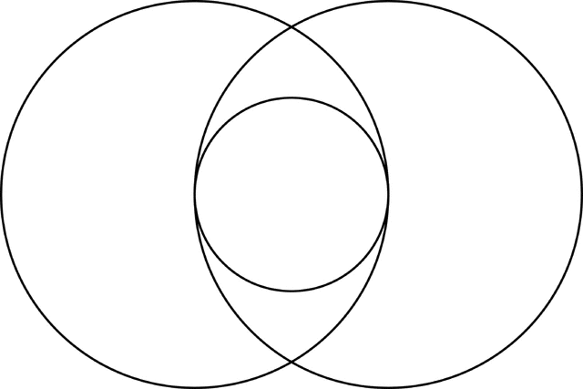

In this article it is described a beautiful analogy and metaphor between a pattern from computer science(MVC) and the structure of a human being. It should better be aproached in a philosophical manner rather than a technical one. The content of this is all an abstraction. Philosophers throughout history tried many times to define a structure of a human being and a lot of them came to the conclusion that a human is structured in the following way: soul/counsciousness, ego/personality and image to the outer world. The ego works like a membrane and makes the osmosis possible between the outer world and soul/counsciousness. This takes us to the MVC pattern which works exactly the same.

Every being from every dimension follows the following structure and pattern : MVC. M stands for Model, V for View, and C for controller. The correct abbreviation might be MCV because this is how the information flows, it goes from the model through the controller to the view and in reverse order from view to the controller and finally it reaches the model. But the computer science community agreed to the MVC abbreviation because there is this model-view connection which is done by the controller. If you are not familiar with this pattern I will explain it briefly. We have this information about an object(model) which needs to be exposed to the outer world(view - in computer science we refer to it as UI, it might be a webpage, or a desktop UI app, etc.). This information is handled and managed by a controller. The controller performs the connection between the model and the view (it controlls the connection). How does this apply to the spirituality ? In the same way, we are structured as Model - Soul/Counsciousness, Controller - Personality, View - Outerworld. When two persons communicate each other it is from the level of MVC pattern to another MVC pattern. For example, let's say that I communicate with another being. When I do that, my soul/counsciousness(model) wants to express an idea to the other person. The other person is the View in my own MVC pattern. The way I express that idea is my own style, it's my own personality and in this context it is the controller. So basically the controller takes the idea from my mind and expresses it through words, or chat, or letters to the other person. The way the information is expressed it is not the Model's responsibility anymore. So if the information reaches my View the other person is able to receive it and integrate it. It begins another process in reverse order on his own MVC pattern. So, his View says to his controller "Hey, I got this information? What should we do with it ?". The controller responds with "Let me see what I can do with it". So the controller gets the information interprets it through his own personality in his own way, and he might accept it or reject it. If he accepts the information it will send it to the model. The information reaches the model already processed and interpreted. The model integrates the information and updates itself. But before that, the model performs his own validations and checks. Some informations might be ok with our personality but not with our soul and counsciousness. A rejection might occur at this level too. He might decide to respond or not. This is how the information flows when we communicate described with MVC pattern.
I described above the basic communication between two persons. To raise the awareness of a person individually you must understand this pattern. So, when a person with a high level of cosnciousness wants to raise the awareness of a person with a lower level of cosnciousness it applies this MVC pattern. The communication is different on the both sides. How does this process work ? When the evolved person communicates the idea from his level of awareness the information flows from the Model (soul/consciousness) to the controller. Here at the level of the controller the information is encoded so that the other person could understand it somehow. The encoding is usually referring to analogies, metaphors, short stories with meaning, parables, comparisons, concepts and so on. After the information is encoded it is delivered to the View. The view of the person with lower level of awareness receives the information, it might apply validation but not processing. If it passes the validation the information goes to the controller which decodes it with his own tools (knowledge, understanding, education etc.) and sends it to the model(soul,counsciousness). Validations are applied on this levels as i discussed before. The model could accept the information or it could refuse it. It is his decision and responsibility.

Raising the awareness of a being is a very difficult and dangerous task. If a person decides to do this he must consider these risks: long story short, it implies death. As Murphy said "Smile, tommorow will be worse". It is a very important decision to take. One advice I can give related with raising the awareness of other being sounds like this : If you ever decide to do this, do it with power, and with patience(be patient most of the time, sometimes it is not required to be patient all the time). Be determined. If you took that decision, follow it. You have to prove your power to the other person - he has power too, but a brute primitive force, yours is elevated. Take the actions exactly when it is needed, do not postpone them. Postponing them you might get in the position when later you might take a more brutal action. "Turning the cheek" is a very effective way to raise the awareness of a being - this is why I emphasized it requires patience.
I will make a short recap with what happened throughout history with people that had a high level of counsciousness and tried to raise the awareness of the planet Earth.
Jesus - killed
Buddha - killed
Muhhamad - attempt to be poisoned
Socrates - killed
Hypatia - killed
Galileo Galilei - close to death
Nicolaus Copernicus - close to death
Giordano Bruno - killed
Eminescu - killed
Rasputin - killed
Mahatma Gandhi - killed
Nikola Tesla - died alone without any recognition
Martin Luther King - killed
This theme and pattern of murdering a person who is above us with his level of awareness is so recurrent in our global history. The question is, are we gonna change something about this, or we will make the same mistakes again ? Are we gonna change something about our behaviour, or we will continue to be savages and throw rocks to whoever manages surpass us ? We behave like crabs in a bucket. If one tries to get out of bucket we grab him back and don't let him escape.
For raising the awareness of the collective we must understand that we are all interconnected in the wireless network. The wireless network, ultimately, is a graph and it works as I described in the previous chapter. We must be aware of the collective counsciousness. There are 3 universal laws and principles we must respect and focus on in order to raise the awareness of the collective. The other laws are optional and might be a bonus in this context but these 3 laws are sufficient to raise the awareness. These three laws are : karma, law of attraction and the law of vibration/resonance.
How does this work ?
A being does positive actions (karma), and it attracts more positive events in his life(law of attraction), thus it resonates and vibrates with people of positive vibration. That's it. Is that simple.
But this being must be aware of these laws in order to make it happen efficiently. This being might have done it in his life before but without being aware. The true power of the technique was lost without being
aware. The key is to be aware of it. This powerful technique grows exponential, and accelerates the vibration of the collective. Imagine if the people this being meets are also aware of this technique - they will take the vibration to someone else and another place, the good deeds (positive actions) will spread even faster. When I say that a person does positive actions, i mean that these actions are focused ,at first, towards himself not to the others. First, this person needs to take care of it self. This person should forget for a moment about the others and focus only about himself.This way he will grow. Positive actions, and great deeds towards others should be focused around the others later on. How would a person can take care of others if it is not able to take care of himself ?
What does the internet do to ourselves ? What are his effects ? The internet is a tool which manifests in virtual reality and shapes our collective mind. The virtual reality is still reality, after all, because if it wouldn't be reality it won't exist. The imagination is still reality, on the same principle, if it wouldn't be reality it wouldn't exist. What are the social sites doing to ourselves ? Take Facebook for example - it shapes the image about ourselves but sometimes it spreads false images about ourselves. Facebook its a civilised and positive social site, it is in our hands how we use it and what informations we choose to spread. A hint would be that when we spread information on any forum or social site we must be aware of these connections. To spread positive information in public we must do it in the light following the standards of a truly civilised society.
This is why Nicolas Tesla asserted that we must look at the universe in terms of energy, frequency, vibration.